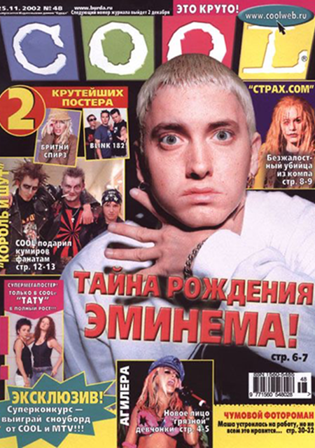

Выпуск 28.09 «движуха»
В этом выпуске расскажем вам про то, как Нинтендо из малого проекта стала огромной компанией с миллионом игр и приставок, какие в Москве проходят актуальные рейв-вечеринки и как для них искать компанию, если ты один. Покажем вам новые новинки в геймдеве от пиксельного шедевра “Eastward” до свеженькой “Silksong”, которую фанаты ждали годами. И не забудем конечно же про свежи сплетни, стримеров и популярные тренды!
